Near-lossless
A quantizer snaps each sample to a grid, so the error never passes the bound you set. Every stage after it is lossless. quant_linear bounds the absolute error, quant_log the relative error, and quant_sqrt an error that grows with the signal, like sensor noise.
The bound covers every finite sample. NaN and infinities are outside it and belong to the nodata codec. On floats, quant_log and quant_sqrt guarantee their bound only from the smallest normal value up, because subnormals sit a fixed gap apart that no bound shrinking with the signal can cover.
15quant_linear
quant_linear snaps samples to one uniform grid, so every sample comes back within MAX_ERROR of where it started, in the data’s own units.

Use it when precision does not depend on size, such as elevation in metres. In the GeoZL API a plain number selects it, so geozl.graph(tile, recipe, error=2) keeps every sample within 2 units of the original. Use quant_log for values spanning orders of magnitude.
| ctid | 0x72D781 |
|---|---|
| header | dtype + flags + step · 10 bytes |
| recipe | LINEAR:MAX_ERROR=V |
| types | integers 8 to 64-bit · floats 16 to 64-bit |
| decode | x = q · step, or a copy when the stream holds the reconstruction |
// integer input
step = max(1, floor(2 * MAX_ERROR));
q = sign(s) * ((abs(s) + step / 2) / step); // encode
o = clamp(q * step); // decodeerror="LINEAR:MAX_ERROR=5"16quant_log
quant_log bounds the error relative to the value. Its grid is uniform in log2. Values near 8 and 8,000 have the same percentage error bound.

Use it on proportional data such as precipitation, radiance or concentrations. A percentage such as error="1%" means LOG. Zero stays exact, and retiling a raster does not change a single value.
| ctid | 0x72D782 |
|---|---|
| header | dtype + flags + step · 10 bytes |
| recipe | LOG:MAX_ERROR=P% |
| types | integers 8 to 64-bit · floats 16 to 64-bit |
| decode | one table lookup, or a copy when the stream holds the reconstruction |
// float input, A is -24 for f16, -149 for f32, -1074 for f64
q = index of the nearest level in log2 space; // encode
o = q == 0 ? 0 // decode
: sign(q) * exp2(A + (abs(q) - 1) * step);error="LOG:MAX_ERROR=1%"17quant_sqrt
quant_sqrt bounds the error at K standard deviations of the sensor noise, whose variance grows as a + b·x. Its levels spread out as the signal rises.

Use it on data from photon-counting sensors. Fit a and b once per product with geozl.lossy.fit_noise() and reuse its recipe(). Per-tile fitting gives tiles different grids.
| ctid | 0x72D783 |
|---|---|
| header | dtype + flags + step + offset · 18 bytes |
| recipe | SQRT:MAX_ERROR=KN, optionally ,A=a,B=b |
| types | integers 8 to 64-bit · floats 16 to 64-bit |
| decode | x = (q · step)² − offset, or a copy when the stream holds the reconstruction |
// encode, the nearest level in the original units
t = (s + offset) / (step * step);
q = t <= 0.25 ? 0 : floor(0.5 + sqrt(t - 0.25));
// decode
o = (q * step) * (q * step) - offset;error="SQRT:MAX_ERROR=0.5N"